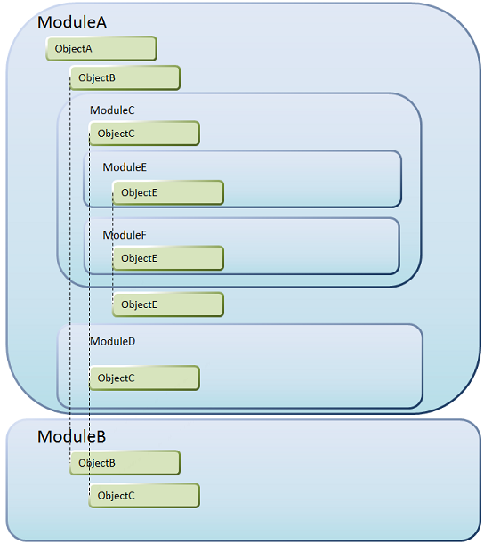

The purpose of this document is to explain how different URLs are modified, by default, when you move objects to a Module object other than the Root module. Consider "ObjectC" in module "ModuleC", in the following image:  Web Objects URLThe URL will be as follows: Java.../packagename.modulea.modulec.objectc When using modules and generating for Java the Java package name property must be set; in this example, it is supposed that its value is: "packagename". Net and .NET Core.../modulea.modulec.objectc.aspx SOAP services URLSOAP services are published using the following syntax: .../modulea.modulec.objectc?wsdl Rest services URLRest services are published using the following syntax: .../rest/modulea/modulec/objectc Info: The URL of a web object and its parameters can be customized using URL Rewrite object, and the one of ReST Services can be customized using API object.
See Also
|
| Backlinks |
| Toc:Modules |
| Working with Modules |